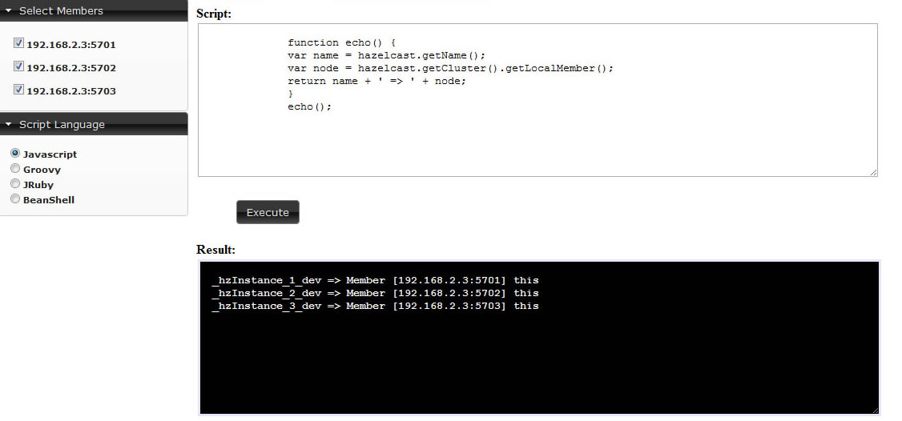

In scripting part, you can execute your own code on your cluster. In the left part you can select members, on which the code will be executed. Also you can select over scripting languages: Javascript, Groovy, JRuby, BeanShell. This part is only enabled for users with read/write permissions for current cluster.
